El sonido que no solo escuchas: también lo sientes en todo el cuerpo. 50 minutos de musicoterapia sobre el Mat Vibroacústico diseñado por Sonofrecuencia.
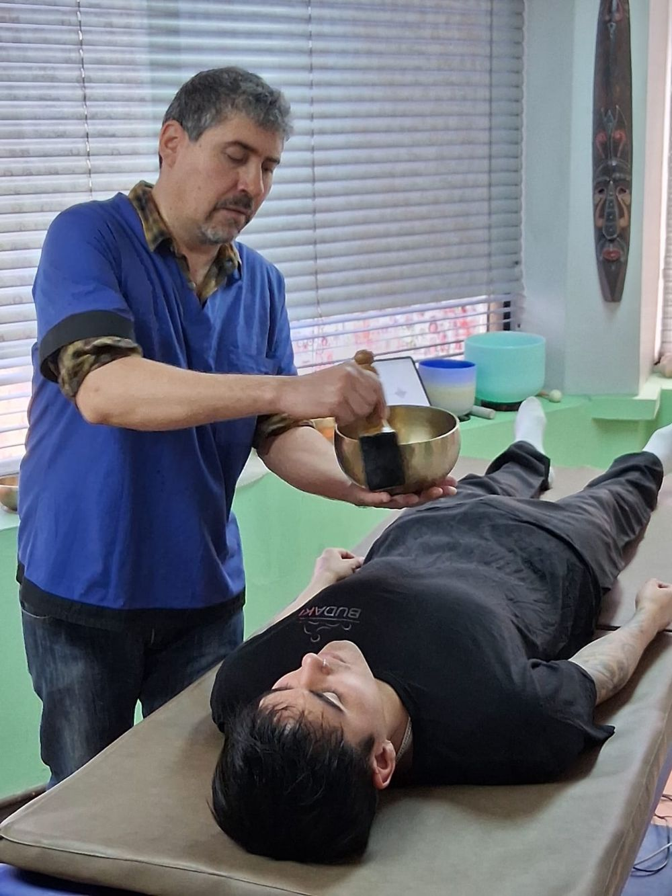
La vibroacústica utiliza sonidos de baja frecuencia que el cuerpo percibe como vibración. No se trata solo de escuchar música: se trata de vivirla con todo el cuerpo.
El Mat Vibroacústico Sonofrecuencia transmite las vibraciones del sonido mediante transductores distribuidos a lo largo de su superficie. Mientras estás recostado, la vibración recorre tu cuerpo de forma envolvente, gradual y confortable, como un masaje sonoro.
Es un desarrollo propio de Sonofrecuencia: une musicoterapia, sonido, vibración y conciencia corporal en una experiencia que no encontrarás en otro lugar de Chile.
Recuéstate. Respira. Escucha. Siente.
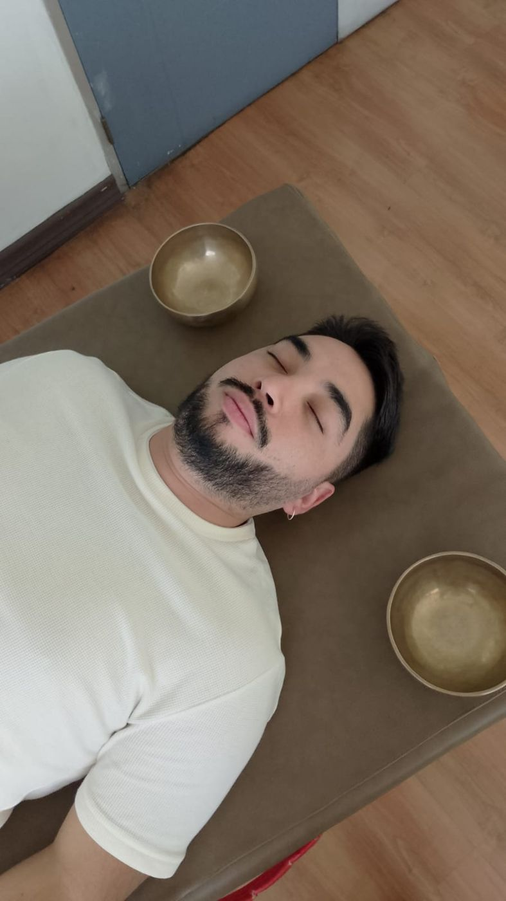
Es como un baño sonoro, pero más inmersivo: mientras los cuencos y la música te envuelven, el mat lleva la vibración directo a tu cuerpo.
El terapeuta crea una atmósfera envolvente con cuencos tibetanos, música, instrumentos y paisajes sonoros.
El Mat Vibroacústico transmite vibraciones de baja frecuencia que se perciben directamente en el cuerpo.
Ambas dimensiones se encuentran, junto a la respiración consciente y la atención plena, en una experiencia profunda de calma y bienestar.
50 minutos para bajar el ritmo. No tienes que hacer nada ni saber de música: solo recostarte y dejarte llevar.
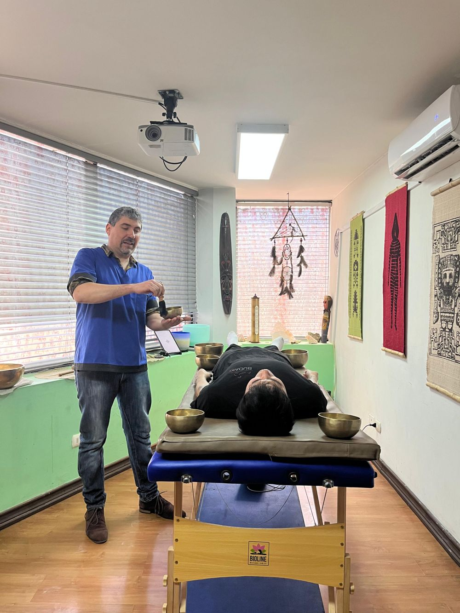
Te recuestas cómodamente sobre el mat. Conversamos brevemente y llevamos la atención a la respiración.
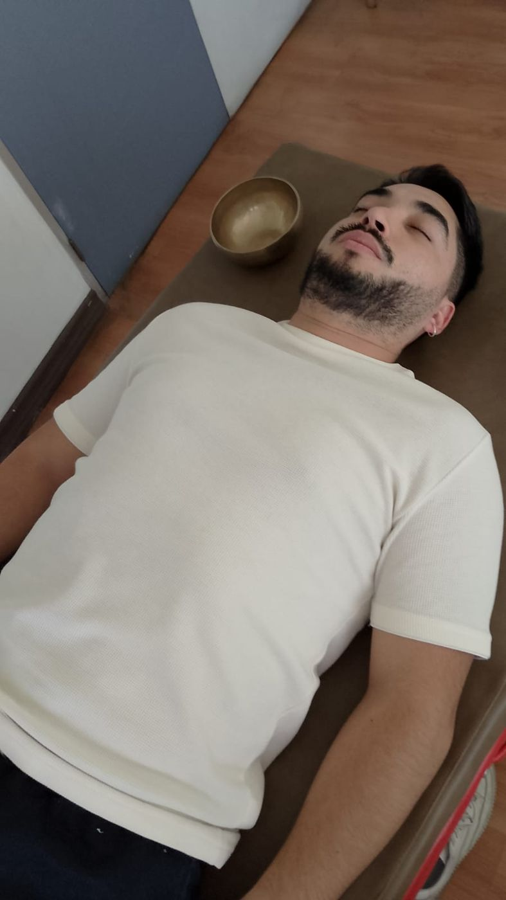
El mat comienza a vibrar de forma suave y progresiva. La intensidad se ajusta a lo que te acomode.
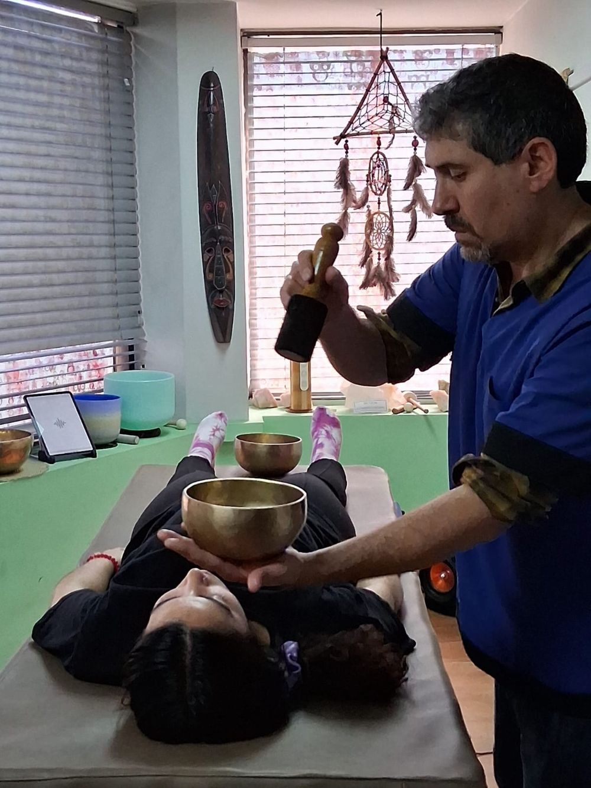
Cuencos tibetanos, música y paisajes sonoros te rodean mientras el cuerpo recibe la vibración.
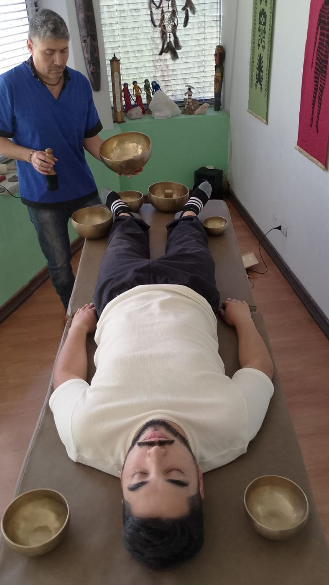
Momentos de sonido, silencio y atención corporal para soltar tensiones y habitar el presente.
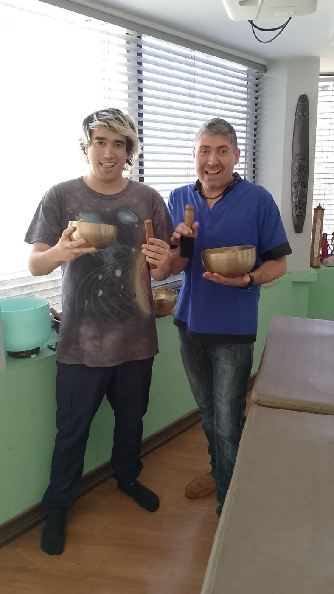
El estímulo disminuye poco a poco. Vuelves con calma y, si quieres, compartes cómo lo viviste.
La experiencia vibroacústica puede favorecer:
Estados de calma y descanso físico y mental.
Alivio de la tensión corporal asociada al ritmo cotidiano.
Un recurso para acompañar la autorregulación y el manejo de la ansiedad del día a día.
Mayor percepción de tus sensaciones, tu respiración y tu cuerpo.
Un tiempo protegido, lejos de pantallas y demandas.
Una forma nueva y profunda de relacionarte con la música y el sonido.
Fragmentos de sesiones reales sobre el Mat Vibroacústico Sonofrecuencia.
Magda, risoterapeuta y facilitadora de bienestar organizacional, vivió la sesión sobre el Mat Vibroacústico y nos contó su experiencia.
Ver testimonio en Instagram
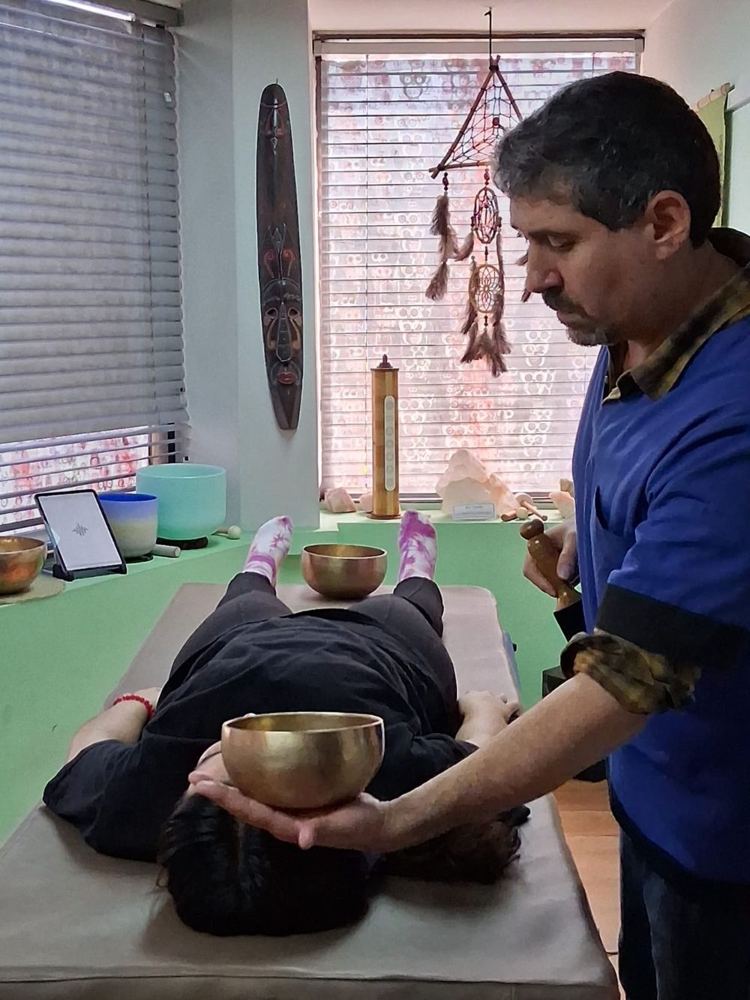
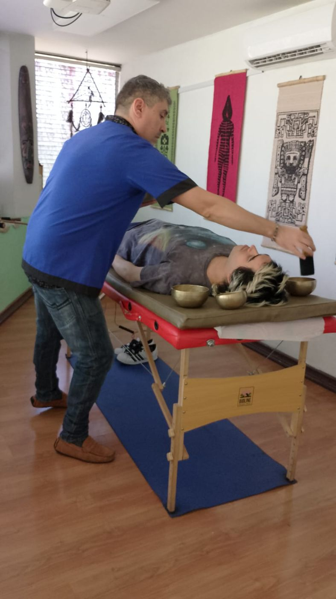
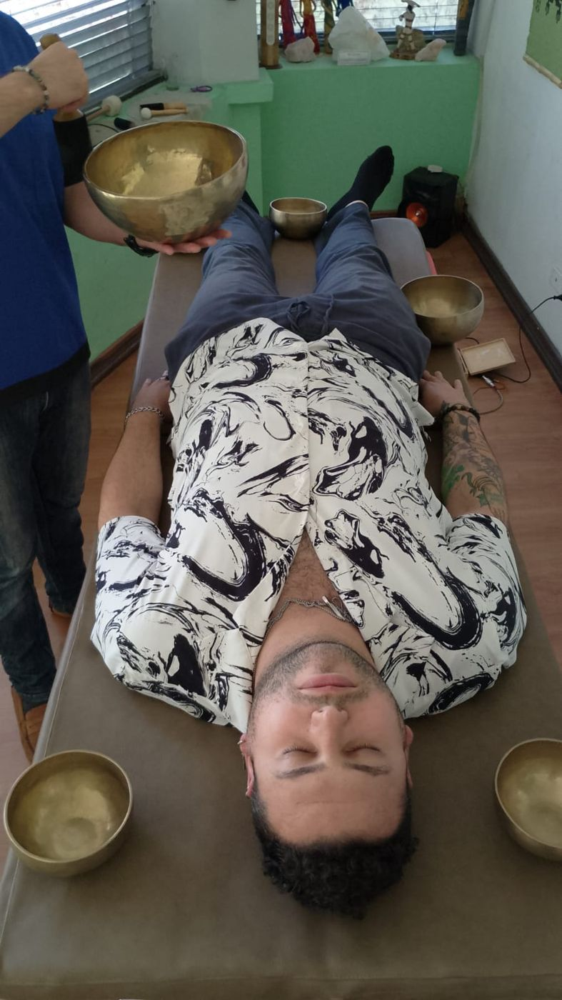
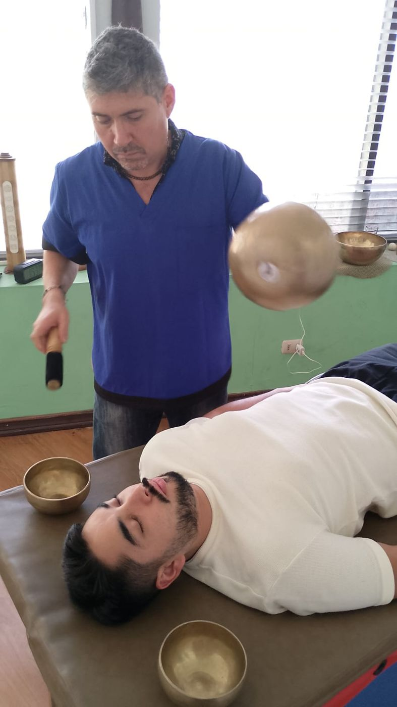
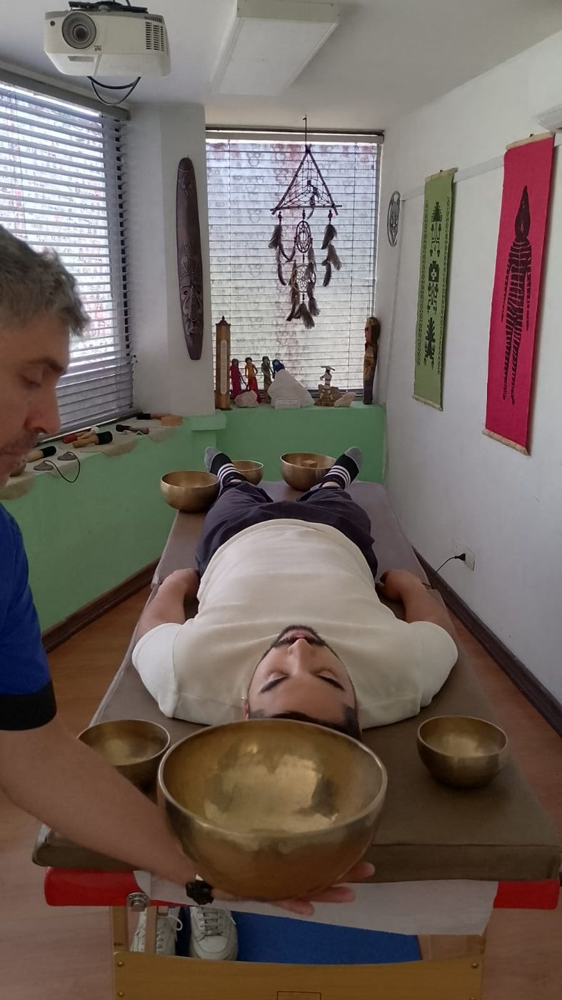
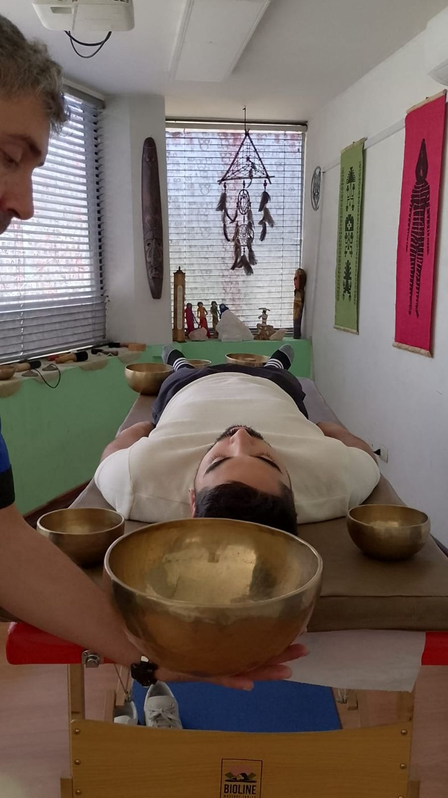
La sesión puede ser especialmente valiosa si buscas:
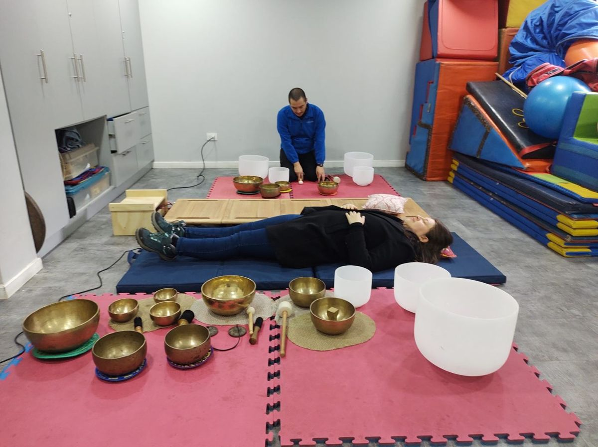
Reinaldo tiene una larga trayectoria acompañando a niños, jóvenes y adultos, incluidas personas con discapacidad múltiple. La vibración permite vivir el sonido a través del cuerpo, una puerta de entrada sensorial que no depende de la palabra ni de la audición.
También ofrecemos sesiones para cuidadoras y cuidadores: un espacio para descansar y recuperar energía para quienes cuidan a otros todos los días.
No es una superficie para escuchar música: es un sistema creado para integrar sonido y vibración corporal, con múltiples puntos de transducción.
Cada sesión la conduce un profesional especialista en terapia vibroacústica, que comprende el sonido, la música y el cuerpo como recursos terapéuticos.
La intensidad, las frecuencias, la música y el ritmo de la sesión se ajustan a tus características y a lo que necesitas ese día.
Música, frecuencias, cuencos, paisajes sonoros, respiración consciente y atención plena, en una sola experiencia.
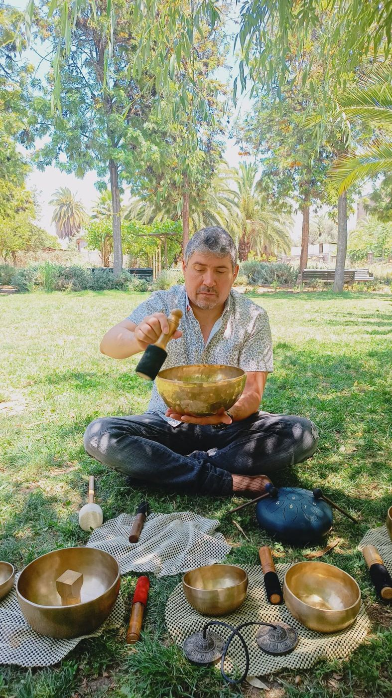
Musicoterapeuta especialista en terapia vibroacústica · Fundador de Sonofrecuencia
“Acompañamiento terapéutico desde la vibroacústica, la música y la atención plena.”
Musicoterapeuta de la Universidad de Chile, con más de 14 años diseñando e implementando intervenciones terapéuticas para niños, jóvenes y adultos, incluidas personas con discapacidad múltiple, cuidadores y profesionales. Su enfoque integra la música, el sonido y la vibración para la regulación emocional, el bienestar corporal y el desarrollo personal, siempre desde el respeto por la individualidad de cada persona.
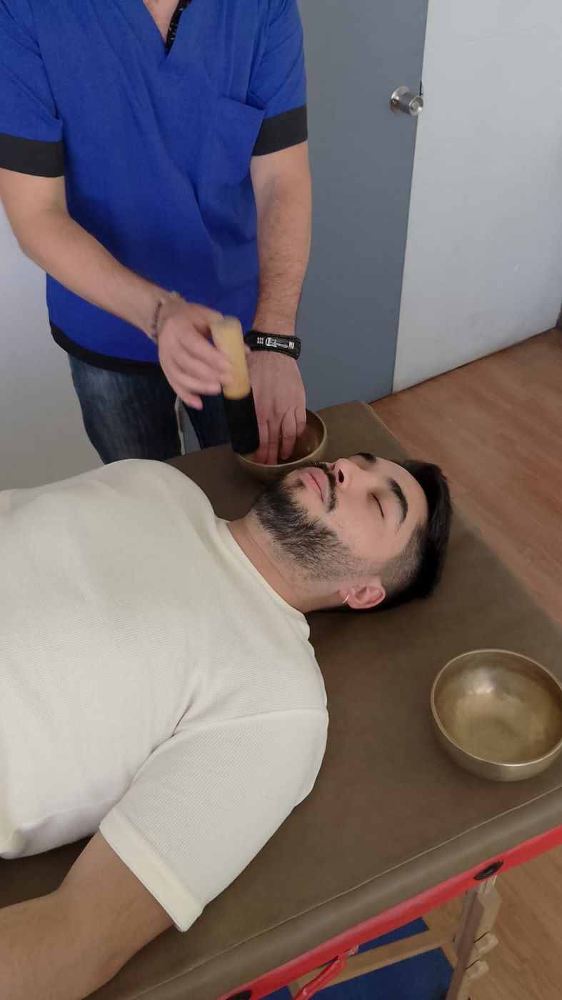
Un regalo distinto, que no se guarda en un cajón: 50 minutos de calma, sonido y vibración. Te enviamos una gift card digital para que la persona agende cuando quiera.
La sesión dura 50 minutos e incluye la bienvenida, la experiencia sobre el mat y un momento de cierre.
Ropa cómoda, idealmente sin cierres ni accesorios metálicos grandes. Te recuestas vestido sobre el mat.
No. Comienza suave y aumenta de forma gradual. La intensidad se ajusta a tu comodidad y puedes pedir cambiarla en cualquier momento.
No. Solo necesitas recostarte y dejarte llevar. El terapeuta te guía durante toda la experiencia.
Sí. Adaptamos la sesión a cada persona. Los menores de edad asisten con un adulto responsable. Escríbenos para coordinar las necesidades particulares.
Escríbenos por WhatsApp al +56 9 7991 3929. Te contamos el valor, la disponibilidad de martes a sábado y las promociones vigentes.
Antes de agendar, cuéntanos si presentas alguna de estas condiciones. En algunos casos conviene consultar primero con tu médico:
La sesión vibroacústica es una experiencia complementaria de bienestar y no reemplaza un tratamiento médico o psicológico.
Budaki · Las Bellotas 199, oficina 54, Providencia